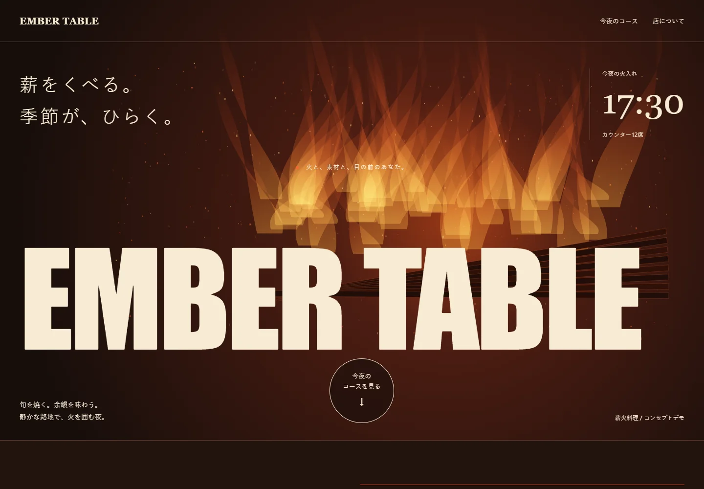
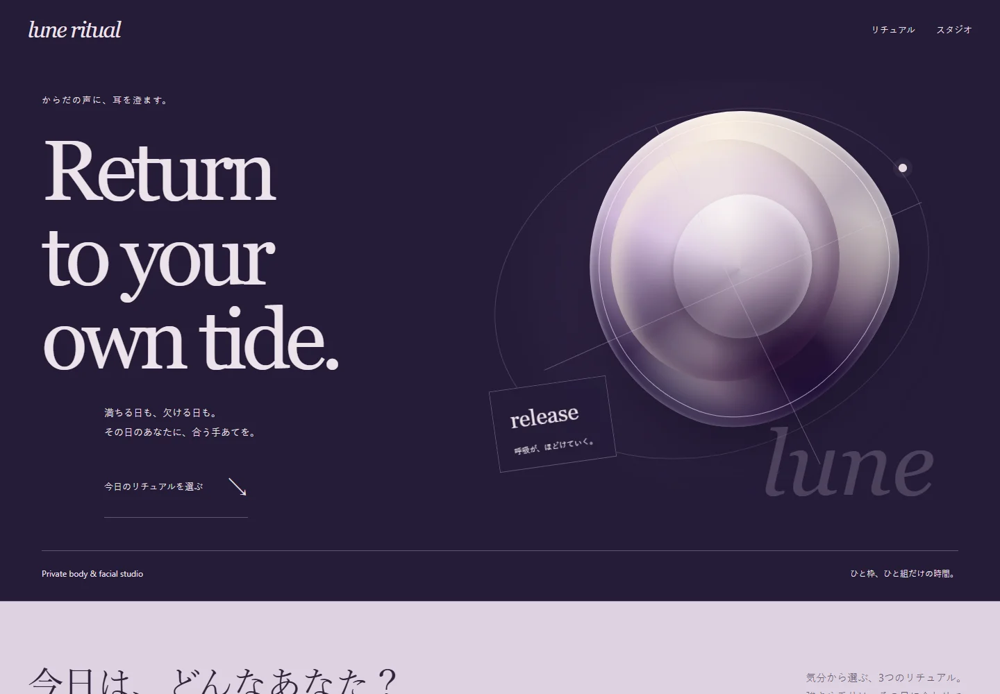
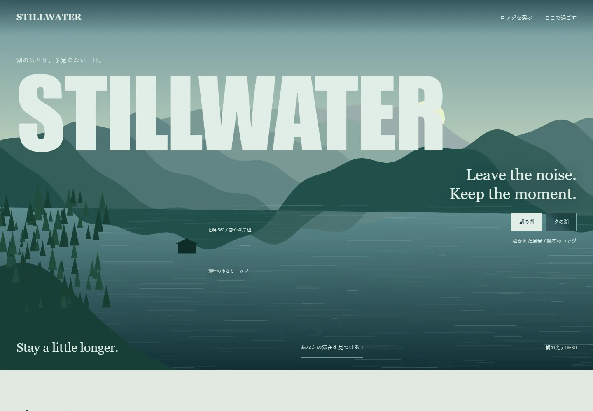
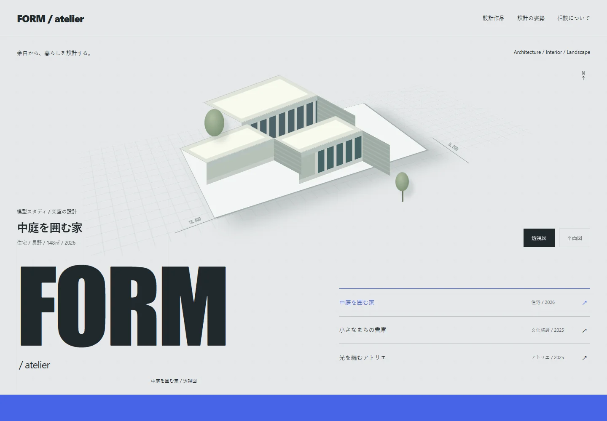
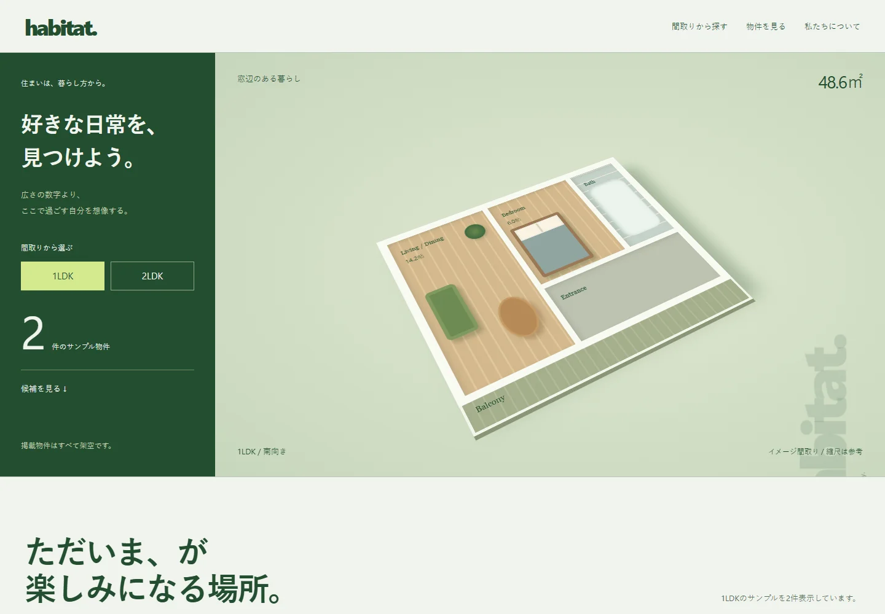
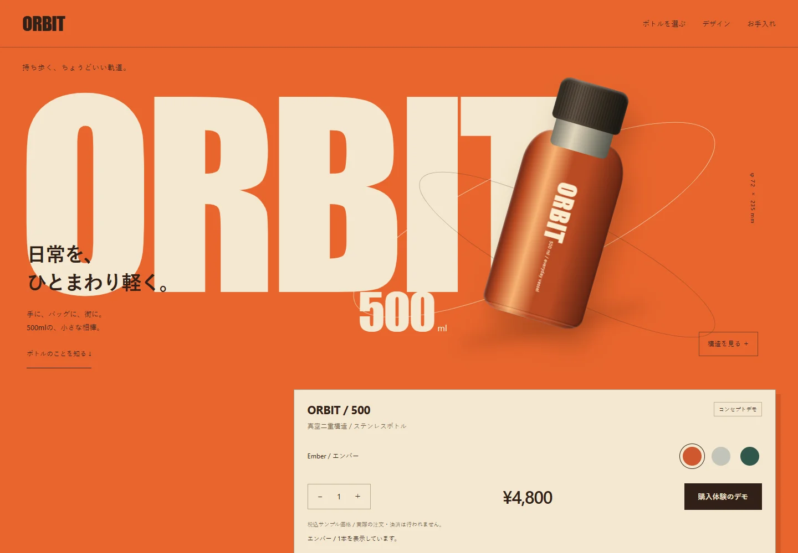
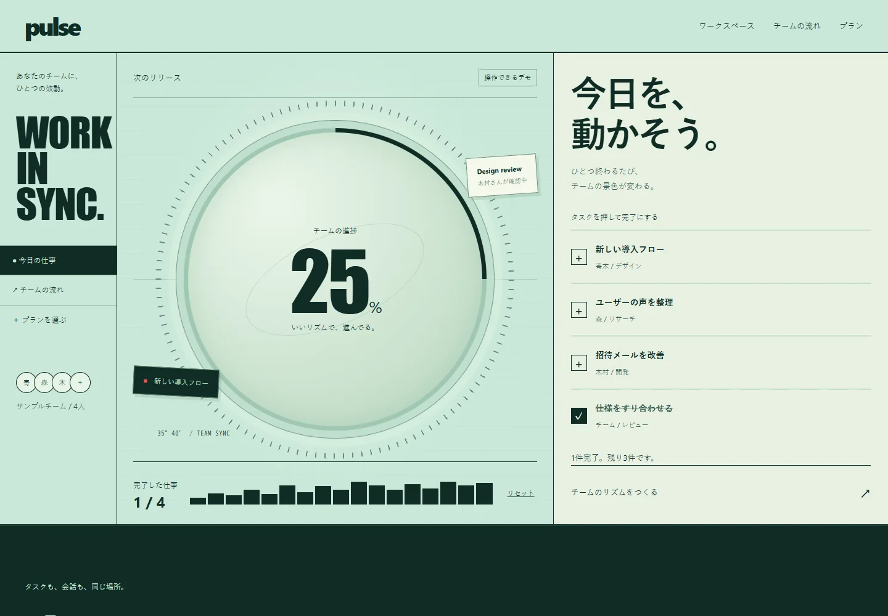
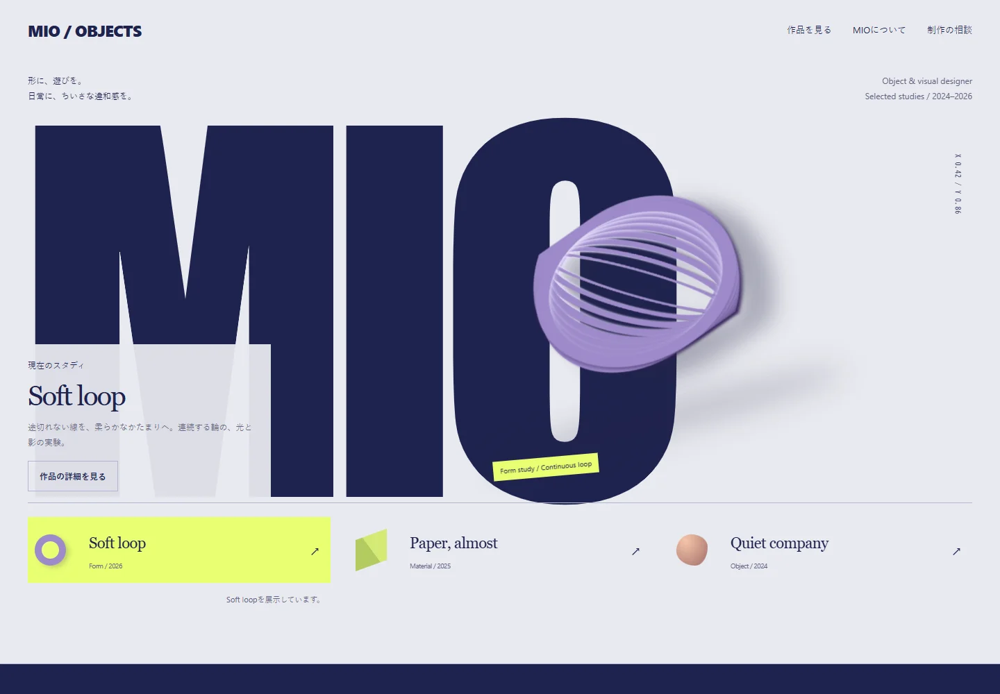
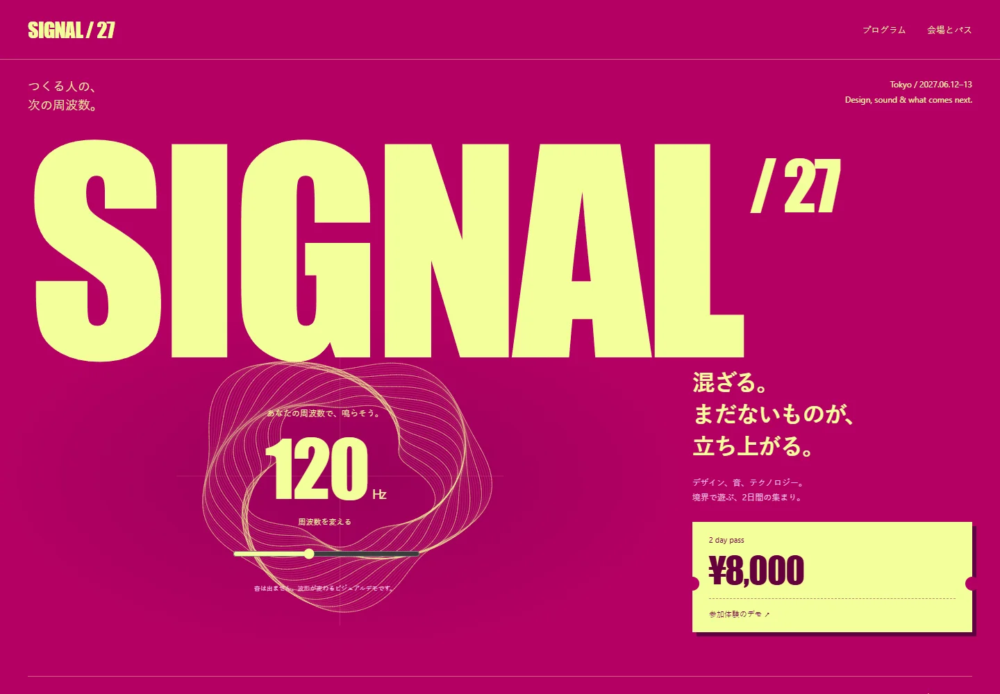
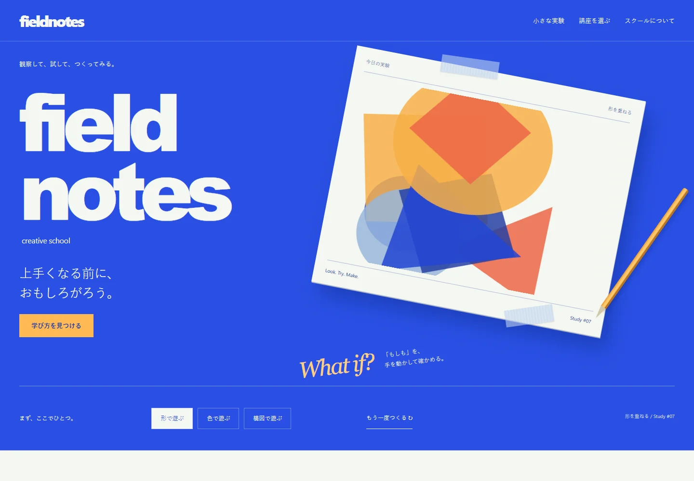

10の仕事に、
10のかたち。
業種も、組み方も、動きも。それぞれの目的から設計した、独立して使えるHTMLサイトテンプレート。
架空のブランドを使ったデモです。送信・予約・購入・決済は行われません。各フォルダに編集ガイドとライセンスを同梱しています。

01 / 飲食・レストラン
EMBER TABLE
火と巨大な活字の舞台。コースを切り替えて味わう薪火料理。
テンプレートを開く ↗
02 / 美容・スパ
lune ritual
真珠色の月と、自分の気分から選ぶプライベートリチュアル。
テンプレートを開く ↗
03 / 宿泊・自然のロッジ
STILLWATER
朝夕で変わる湖の風景と、滞在を選べる小さなロッジ。
テンプレートを開く ↗
04 / 建築・設計事務所
FORM / atelier
設計図の上の建築模型。作品と平面・透視を切り替えるスタディ。
テンプレートを開く ↗
05 / 不動産・住まい探し
habitat.
家具のある立体間取りと、暮らし方から探す住まいの台帳。
テンプレートを開く ↗
06 / EC・プロダクト
ORBIT
金属光をまとったボトル。色・数量・構造を試せるプロダクト。
テンプレートを開く ↗
07 / SaaS・チーム業務ツール
pulse
円形メーターとタスクが連動する、ミント色のワークスペース。
テンプレートを開く ↗
08 / クリエイター・ポートフォリオ
MIO / OBJECTS
巨大な文字と立体彫刻。作品を選びながら歩くデザインの展示。
テンプレートを開く ↗
09 / イベント・カンファレンス
SIGNAL / 27
マゼンタのイベントポスター。周波数と2日間のプログラムを操作。
テンプレートを開く ↗
10 / 教育・クリエイティブスクール
fieldnotes
青い工作机で、形・色・構図を試す。好奇心から始まるスクール。
テンプレートを開く ↗